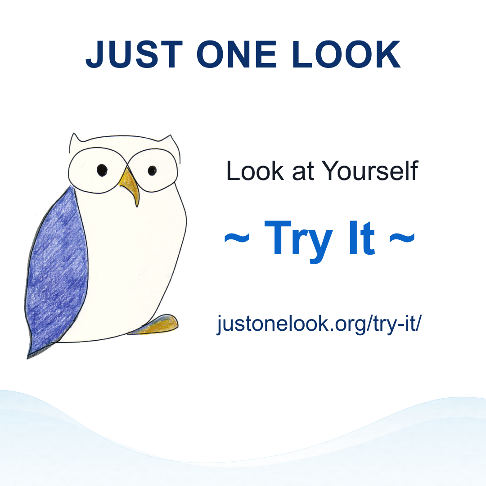

Try It with Zero
Go directly to the Look at Yourself instruction with Zero.
Download QR (PNG) Download Zero QR (SVG)Simple links you can copy and share.
Scan or download a QR code to the website or directly to Try It.
Go directly to the Look at Yourself instruction with Zero.
Download QR (PNG) Download Zero QR (SVG)Ready-to-use images you can share online, print, or send to others.

A simple image to share online.

A ready-to-print invitation with a QR code to Try It.
Follow Just One Look on social media.
Explore the Just One Look video collection, including talks, interviews, and historical recordings.